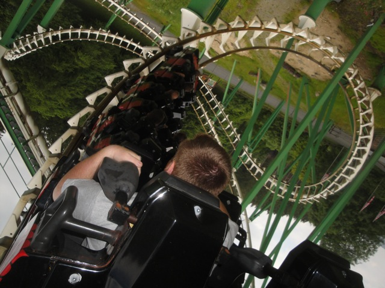
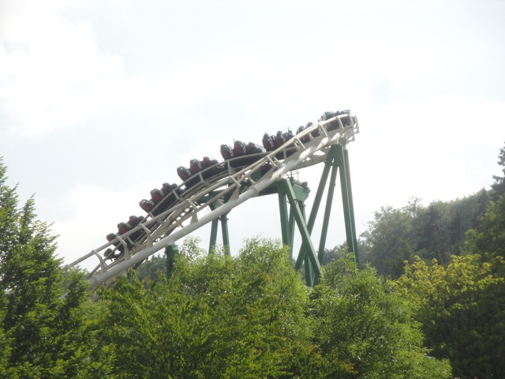
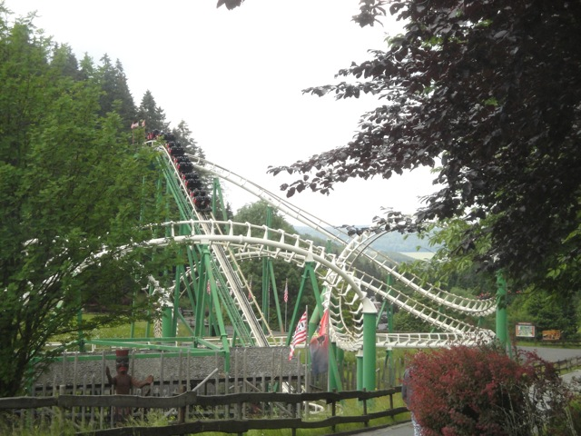
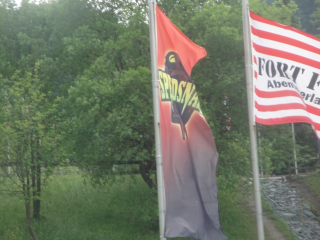

| |
Speed Snake Review

We're here at Fort Fun. Today's ride we'll be reviewing for you is Speed Snake. Now this is one of the Whirlwind models, so while it certainly looks interesting, this ride is not at all. It's a rough peice of sh*t. Once you get in the cars and pull down the OTSRs, you're off. You roll around a curve and head up the lifthill. It's slow, kind of creaky, and you really get a sense of what this ride is about. Plus, passing by the corkscrews are fun. Anyways, you reach the top, and slowly head down the curved first drop. It's small, but it gives us enough speed to go through the course without making it feel like we're crawling. We then head straight from the first drop into the first corkscrew. And that's when we start to notice a real problem with this ride. It is NOT smooth. AT ALL!!! In fact, I'd dare say that it's pretty damn rough. So yeah. That's bad news for this ride. SMACK SMACK!!! OUCH!!! That was certainly unpleasent. We then head around this turnaround as we rattle against the sides of our OTSRs. Yeah, I really don't like this ride. It is not fun or pleasent at all. We then head from the turnaround and dip down to the ground as we tumble into the second corkscrew. And when I say you tumble through it, I mean it. Not pleased at all. We then head around another small little turnaround that is sort of jerky before we glide through some straight track before heading into the brake run. Ugh. Man, what a bad ride. And to make it worse, you go a 2nd time since it is a short ride. DAMMIT!!! I know they mean well, but unlike other corkscrews where it's a fun ride and I personally feel people are bitching too much about a ride that's not that bad and just a little rough around the edges. Not this ride. This ride is as bad as people claim. I'm not sure if it's just the Whirlwind model or just this particular coaster. All I know is that it was ROUGH when I rode it and I did not enjoy it AT ALL!!! Not recommended.
3/10
Location: Fort Fun
Opened: 1982
Built by: Vekoma
Last Ridden: June 26, 2012
Speed Snake Photos



Home
|